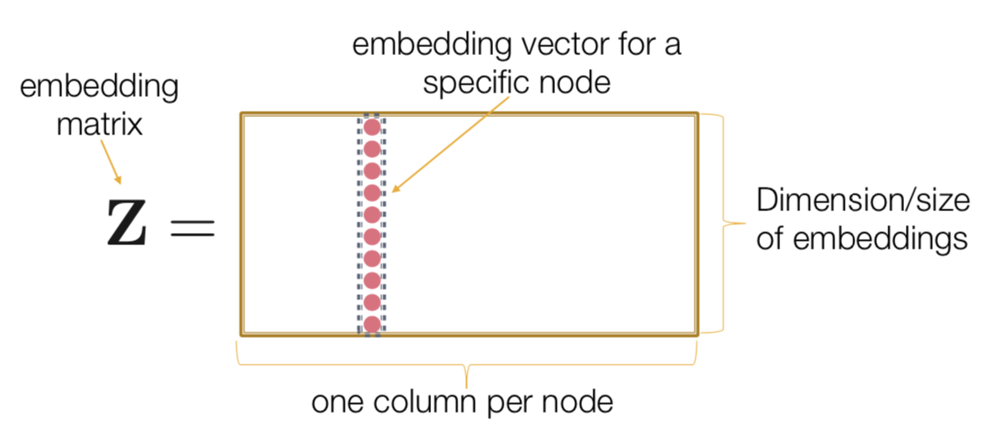
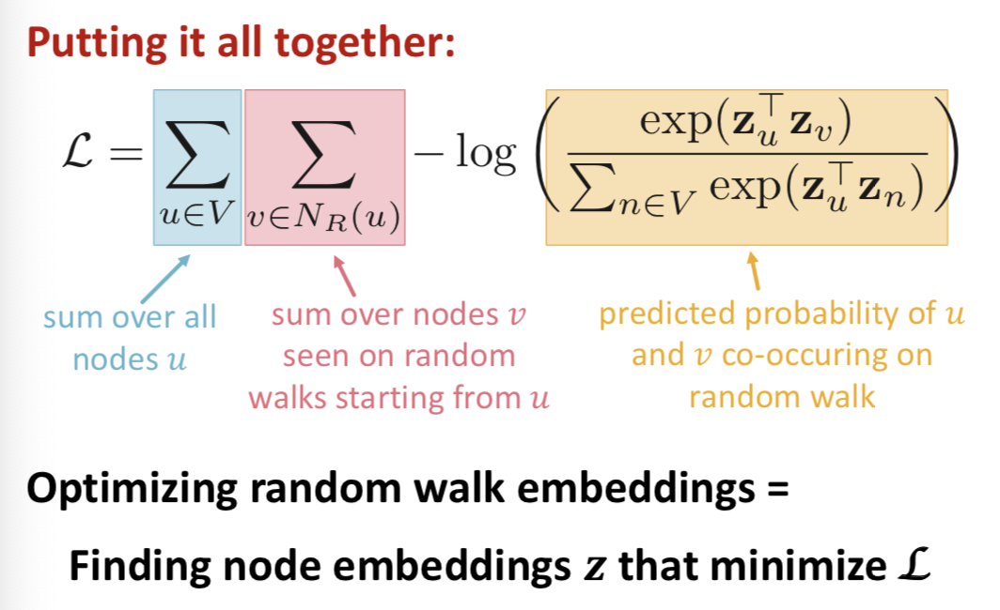
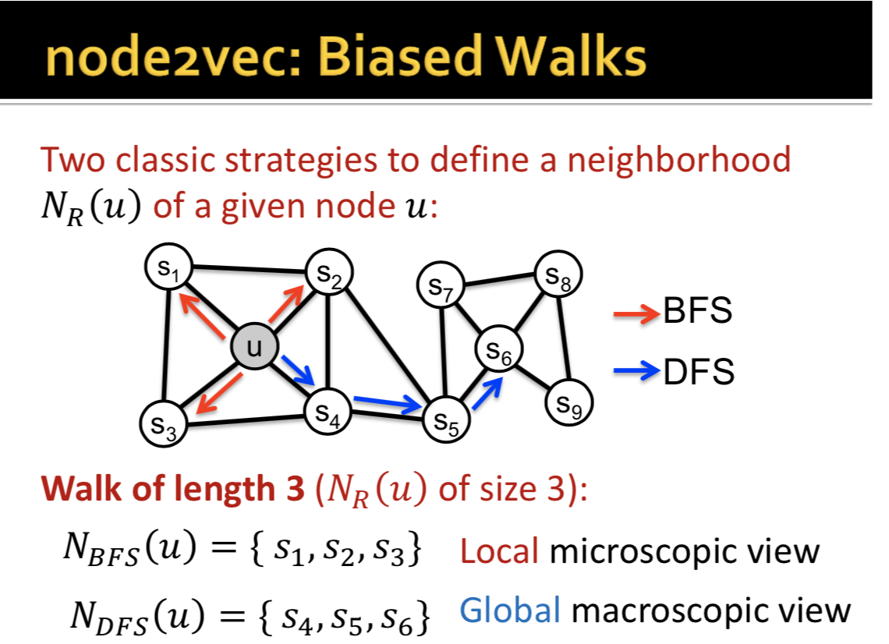
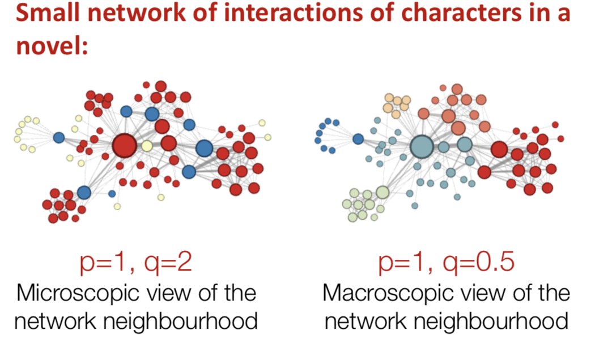

Network node embeddings (Graph Representation Learning)
- Goal: Efficient task-independent graph embeddings, for applications including clustering/community detection, node classification, and link prediction (Example (1)).
Assume we have a Graph G with vertex set V, and adjacency matrix A.
Goal: Embed the nodes so that similairity in the embedding space (e.g. dot product) approximates similarity in the originla network, in terms of the graph neighborhood. To accomplish this we learn an encoding function Enc(v).
Sub-goals
- Define an encoder (a mapping from nodes to embeddings)
- Define a node similarity function (i.e. a measure of similarity in the original network)
- Optimize the parameters of the encoder so that
similiarty(u,v)≈zTvzu
Aside. Basic Starter Example: "Shallow Encoding"
- Simplest encoding approach: encoder is just an embedding-lookup. Each node is assigned a unique embedding vector. That is,
ENC(v)=Zv
, and v is a one-hot indicator vector and Z is the matrix of all the embedding columns.

Aside: How to define node similarity?
Key choice of methods is how they define node similarity.
Should two nodes have similar embeddings if they
- are connected?
- share neighbors?
- have similar 'structural roles'? (no)
DeepWalk: Random Walk Approaches to Node Embeddings
We say that zTuzv≈ Prob that u and v co-occuer on a random walk over the network.
We want to estimate the prob of visditing node v on a random walk starting from node u using some random walk strategy R (PR(v|u)).
And then optimize embeddings to encode these random walk statistics. This is called DeepWalk
Algo: DeepWalk:
- Run short, fixed-length random walks starting from each node on the graph using some strategy R.
- For each node u collect NR(u), the multiset of nodes visited on random walks starting from u.(2)
- Optimize embeddings according to: Given node u, predict its neighbots NR(u), to minimize the sum log likelihood of neighbors:
maxz∑u∈Vlog(P(NR(u)|zu)
(5,6 )
where we define probability using the softmax parameterization.
Pr(zv|zu)=exp(zv⋅zu)∑n∈Vexp(zn⋅zu)
Note that this assumes independence: Conditional likelihood factoizes over the set of neighbors (you can add log likelihoods).
In actuality, we have to estimate the log likelihood using random sampling, and the true equaiton used for computation is given below. (3)
The above method is essentially work2vec, applied to random walks over the graph interpreted as 'sentences'. (6)
Computational Process:
Must use negative sampling

But this is too expensive: Nested sum over nodes gives O(|V|2) complexity, the reason is the normalization term from the softmax.
Solution: Negative Sampling:
Distribute the log, replace the exp with a sigmoid function, and instead of normalizing over all the nodes, just normalize over a random sample of the nodes. You ahve to replace the exp with a sigmoid function because the sigmoid makes each term a "probability" between 0 and 1, putting the numerator and denominator in the same scale and making it possible to normalize over not all the nodes.
log(exp(zTuzv)∑n∈Vexp(zTuzn))≈
log(σ(zTuzv))−∑i=1klog(σ(zTuzni)),s.t.ni~PV
How to we take the ramdom samples? We sample k negative nodes proportional to degree. In practice, k = 5 - 20.
(Ref 5)
So in actuality, in step 3. above, we optimize embeddings using Stochastic Gradient Descent according to
ℒ=∑u∈V∑v∈NR(u)−log(P(v|zu))
with
P(v|zu) defined according to the softmax and efficiently appromated using negatie sampling. (4)
How should we randomly walk? Simplest idea in DeepWalk is to just run fixed-length, unbiased random walks starting from each node, but such a notion of siilarity has flaws. Node2Vec (Jure's discovery, Grover and Leskovec, 2016) uses a biased random walk instead.
Node2Vec:
- Goal is Same as above: Embed nodes with similar network neighborhoods close in the fature space. We frame this goal as prediction-task independent maximum likelihood optimization problem. (7)
- Idea: Uses biased random walks to trade off between local and global views of the network. In some ways this is like an interpolation between a BFS and DFS search over the network.

Def: A biased fixed-length random walk R that given a node u generates neighborhood NR(u) is defined by two parameters: (8)
- Return parameter p: Return back to the previous node
- As the random walk make a step, with prob p you return to the last step.
- In-out parameter q:
- Moving outwards (DFS) vs inwards (BFS)
- Intuitively, q is the 'ratio' of BFS vs DFS.
The biased 2nd order random walks explore network neirhborhoods in the following way: Suppose the random walk just traversed edge (s1,w) and is now at w. At every step, there are three possible actions:
- Go back to the previous node (decrease distance 1)
- Maintain the same distance to the starting node (simulates BFS).
- Go to a node one farther from the starting node (simulates DFS).
- We use p and q to put transition proabilities over the edges as sbove.
- a BFS-like walk has a low value of p, a DFS-like walk has a low value of q. THe difference between BFS and DFS is that BFS captures the micro-view of the neighborhood, while DFS captures the macro-view of the neighborhood. (Example- (8)) The neighborhood NR(u) are the nodes visited by the ramdom walk.
So the full algo is:
Algo (Node2Vec):
- Compute random walk probabilities given p and q.
- Simulate r random walks of length l starting from eahch node u
- Optimize the node2vec objective using SGD.
Node2vec has linear time-complexity, and all three steps are individually parallelizable.
Final Notes
How to use embeddings:
- Clustering/community detection: Cluster nodes/points based on zi.
- Node classificaiton: Predict label f(zi) of node i based on zi.
- Link prediction: Predict edge (i,j) based on f(zi,zj)
- We can have f(zi,zj) be the concatenation, avg, product, or differnece between the embeddings.
- Concatenate: f(zi,zj)=g([zi,zj])
- Hadamard: f(zi,zj)=g(zi∗zj) (per-coordinate product)
- Sum/Avg: f(zi,zj)=g(zi+zj)
- Distance: f(zi,zj)=g(||zi−zj||2)
Which Approaches to use
Node2vec performs better on node calssification whiel multi-hop methods perform better on link prediction.
Random walk approaches are gnerally more efficient.
What if we wanted to embed entire graphs?
You can use this to go graph anomay detection, classifying social networks, analyze reddit comment threads, represent molecules as graphs and identify carcinogenic networks etc.
Two approaches to full graph-embedding:
- Simple idea: The embedding of the graph is simply the sum of the embeddings of the nodes.
- Introduce a 'virtual node' which is connected to all the nodes in the graoh to represent the (sub) graph and run a standard graph embedding technique.
Other Random walk ideas:
- Different kinds of biased random walks
- Based on node attributes (Done et al 2017), based on learned weights (Abu-El-Hajia et al 2017)
- Alternative optimization schemes
- Directly optimized based on 1-hop and 2-hop random walk probabilites (LINE)
- Network preprocessing techniques
- Run random walks on modified versions of the original network. (Struct2vec, HARP)
Appendix:
Appendix 1: Why random walks?
- Expressivity: Flexible stochastic definiton of node similarity that incorporates both local and higher-order neighborhood information
- Efficiency: Do not need to consider all node paits when training, only need to consider nodes that co-occur on ranodm walks.
Intuition Between Random Walks:
Find embedding of nodes to d-dimensional space so that node similarity is preserved.
Idea: Learn node embedding such that nearby nodes are close together in the network. Given a node u, how do we define nearby nodes? Define a node neighborhood: NR(u) is the neighborhood of u defined by some strategy R.
Feature Learning as Optimization:
Given G(V,E), our goal is to learn a mapping z:u→ℝd to minimize the log-likelihood objective:
maxz∑u∈VlogP(NR(u)|zu)
where
NR(u) is the neighborhood of node u.
Given node
u, we want to learn feature representations predictive of nodes in its neighborhood
NR(u), under the assumption that condition likelihood factorizes over the set of neighbors:
log(P(NR(u)|zu)=∑v∈Ns(u)log(P(zv|zu))
Notes:
(1)
(2) NR(u) can have repeat elements since nodes can be visited multipe times on random walks.
(3) Softmax works because the sum of the exponents ≈ the maximum of the exponents, the big guy eats up all the others.
(4) Note that this is a random sample over all nodes, not just nodes in the neighborhood.
(5)
So in actuality, in step 3. above, we optimize embeddings using Stochastic Gradient Descent according to
ℒ=∑u∈V∑v∈NR(u)−log(P(v|zu))
with
P(v|zu) defined according to the softmax and efficiently appromated using negatie sampling. (4)
(6) This is very analogous to work2vec. In work2vec, we have a sliding window over words and we try to predict what words are near to a particular one to form the embedding. In Node2Vec, we have a random walk over nodes and we try to predict what nodes are close to a particular one to form the embedding.
Specifically, node2vec is, we take a graph, we get a random walk over the graph, that gives us a sequence of nodes which is like a 'sentence', and then we run 'word2vec' on that sequence to determine what nodes should be in the neighborhood of a particular node.
Similarly to word2vec, each node can have 2 embeddings, a separate embedding for whether they are in the center of the set or in the context of the set.
(7) Key observation: Flexible notion of network neighborhood NR(u) of node u leads to rich node embeddings. Use flexible, biased random walks that can trade off between local and global views of the network.
Using the 1st order labeled random walk, develop biased 2nd order random walk R to generate netwokr neighborhood NR(u) of node u.
(8)
In the micro view (BFS, medium p high q), the yellow nodes are the fringe nodes, the blue nodes are connectors between the local nodes and the center nodes, and the blue nodes are the center nodes. In the micro view, you never have a view of the whole network, just what a node looks like in the context of its surroundings, so you get nodes with similar functions (similar types of connectedness) embedded to similar coordinates.
In the macro view (DFS, medium p low q), the nodes are similar to each other based on how similar they are in the context of the whole graph. So you see clusters of nodes (communities) embedded similarly in the graph.